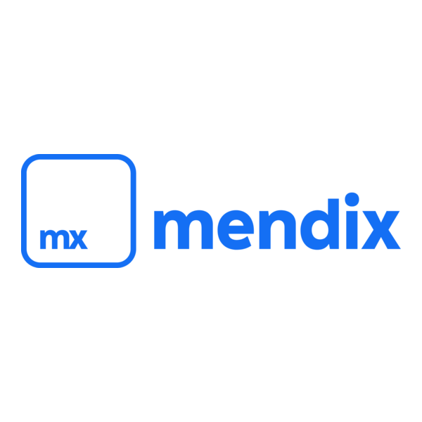

Mendix es una plataforma de desarrollo low-code habilitada para IA que permite crear aplicaciones web y móviles de manera rápida y eficiente.
Mendix permite acelerar el desarrollo de software reduciendo costos y tiempo de entrega.
Mendix se utiliza en diversas industrias: manufactura, banca, energía, salud, entre otros.
Uno de los recursos oficiales es Mendix Academy
Nombre: Halan Fernando Guerrero Rodriguez
Correo: heartsmorning@gmail.com
Escuela: Universidad Tecnologica del Norte de Guanajuato (UTNG)